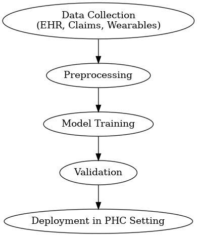

WEEK 2 - LITERATURE REVIEW
A systematic review of clinical health conditions predicted by machine learning diagnostic and prognostic models trained or validated using real-world primary health care data
BACKGROUND / MOTIVATION :
The integration of machine learning (ML) into healthcare has been one of the most significant developments of the past decade. As healthcare systems generate massive amounts of electronic health records (EHRs), insurance claims data, and wearable sensor data, there is an increasing interest in using ML models for disease prediction, risk stratification, and prognosis.
However, most prior ML research has relied heavily on hospital datasets or controlled trial data. These data sources, while high quality, do not capture the everyday experiences of patients in primary health care (PHC), where most chronic conditions such as diabetes, hypertension, and cardiovascular disease are first diagnosed and managed. This creates a major gap: if ML models are trained primarily on tertiary hospital data, they may not generalize to real-world PHC environments.

The significance of Abdulazeem et al.’s (2023) paper lies in its systematic review of studies that specifically trained or validated ML models using PHC data. By analyzing 106 studies covering more than 24 million participants, the authors shed light on both the progress and shortcomings of ML in real-world disease management. This is crucial as healthcare moves toward more personalized, predictive, and preventive approaches.
METHODS USED
The authors employed a systematic review methodology following PRISMA (Preferred Reporting Items for Systematic Reviews and Meta-Analyses) guidelines, ensuring transparency and replicability. They searched multiple databases including PubMed, Cochrane, Elsevier, Web of Science, IEEE Xplore, ACM, and preprint servers such as bioRxiv.
This broad search strategy ensured the inclusion of both clinical and computational literature. Inclusion criteria required that studies must use real-world PHC data and apply ML models for either diagnostic or prognostic purposes. Exclusion criteria filtered out simulation-only studies and those using purely hospital datasets. The final pool of 106 eligible studies spanned 42 health conditions, with 207 unique ML models evaluated. The authors categorized the studies by disease type (e.g., diabetes, Alzheimer’s, cardiovascular), by model type (e.g., logistic regression, random forests, support vector machines, neural networks), and by validation strategy (internal cross-validation vs. external validation).
A major methodological innovation was the use of the PROBAST tool (Prediction model Risk Of Bias Assessment Tool) to evaluate the methodological quality of the included studies. This allowed the authors to move beyond reporting performance metrics to critically assess generalizability and potential bias.
Performance Metrics
Accuracy:
\[ Accuracy = \frac{TP + TN}{TP + TN + FP + FN} \]
Precision (Positive Predictive Value):
\[ Precision = \frac{TP}{TP + FP} \]
Recall (Sensitivity):
\[ Recall = \frac{TP}{TP + FN} \]
Specificity:
\[ Specificity = \frac{TN}{TN + FP} \]
F1 Score:
\[ F_1 = 2 \times \frac{Precision \times Recall}{Precision + Recall} \]
AUROC (Area Under ROC Curve):
\[ AUROC = \int_{0}^{1} TPR(FPR^{-1}(x)) \, dx \]
Cross-Validation Performance Estimate
\[ \hat{E}_{CV} = \frac{1}{k} \sum_{i=1}^{k} E_i \]
PROBAST Risk of Bias Scoring
\[ RiskScore = \sum_{j=1}^{m} w_j \cdot I(bias_j) \]
where
- (m) = number of bias domains (participants, predictors, outcomes, analysis)
- (I(bias_j)) = indicator if bias present
- (w_j) = weight for domain (j)
SIGNIFICANCE OF THE WORK
The findings of the review are highly significant. Diabetes mellitus was the most frequently studied health condition (21 studies, 19.8%), followed by Alzheimer’s disease (12 studies, 11.3%), cardiovascular diseases (9 studies, 8.5%), hypertension (7 studies, 6.6%), and chronic respiratory diseases (6 studies, 5.7%). These patterns reflect the global burden of chronic diseases in PHC. In terms of methodology, logistic regression and random forests remained the most widely used models, but there was also significant exploration of support vector machines, gradient boosting, and deep neural networks. Importantly, while many models demonstrated promising predictive accuracy (AUROC scores often above 0.80), the majority of studies lacked external validation, limiting their applicability in practice. One of the most striking findings was that 90.8% of the included studies were judged to be at high or unclear risk of bias. This suggests that although ML shows potential in PHC, methodological weaknesses currently limit its clinical utility. The review underscores the urgent need for more robust validation and fairness-aware algorithms to ensure equitable deployment.
CONNECTION TO WORK
This paper builds upon and differs from previous literature in meaningful ways. Earlier reviews on ML in healthcare primarily focused on hospital-based EHRs or specific disease categories. For example, prior systematic reviews often limited their scope to oncology or cardiology, overlooking the diversity of conditions seen in PHC. By contrast, Abdulazeem et al. (2023) covered 42 different conditions, offering a broader view. The study also connects with the growing body of literature on real-world evidence (RWE). Regulatory bodies such as the U.S. FDA and EMA have increasingly acknowledged the role of RWE in medical decision-making. By demonstrating both the potential and pitfalls of ML applied to RWE in PHC, this review provides critical context for policymakers and regulators. The authors cited several seminal works on fairness, interpretability, and ethics in ML, highlighting frameworks such as SHAP and LIME for model interpretability. This positions their review not just as a catalog of studies but as a roadmap linking technical, clinical, and ethical perspectives.
RELEVANCE TO CAPSTONE PROJECT
The paper is directly relevant to the anticipated capstone project, which also aims to explore machine learning applications in disease prediction and management using real-world data. Several aspects of this study inform the capstone design:
It highlights commonly used algorithms (logistic regression, random forests, neural networks) that could be applied to capstone datasets.
It identifies limitations (lack of external validation, bias, interpretability issues) that the capstone project can aim to address.
It emphasizes the importance of chronic conditions such as diabetes and cardiovascular disease, which may align with the capstone’s focus areas.
It demonstrates the value of rigorous evaluation frameworks (AUROC, sensitivity, specificity, PROBAST) that the capstone can adopt.
By incorporating these insights, the capstone project could contribute by developing more interpretable models, integrating fairness constraints, or validating models across diverse patient subgroups. This would build upon the gaps identified in Abdulazeem et al. (2023) while moving the field forward.
REFERENCES
- Abdulazeem, H., Whitelaw, S., Schauberger, G., & Klug, S. J. (2023). A systematic review of clinical health conditions predicted by machine learning diagnostic and prognostic models trained or validated using real-world primary health care data. PLOS ONE, 18(9), e0274276. https://doi.org/10.1371/journal.pone.0274276
- Klonoff DC. The expanding role of real-world evidence trials in health care decision making. J Diabetes Sci Technol. Jan 2020;14(1):174-179. [FREE Full text] [doi: 10.1177/1932296819832653] [Medline: 30841738]
- Junaid SB, Imam AA, Balogun AO, De Silva LC, Surakat Y A, Kumar G, et al. Recent advancements in emerging technologies for healthcare management systems: a survey. Healthcare (Basel). Oct 03, 2022;10(10):1940. [FREE Full text] [doi: 10.3390/healthcare10101940] [Medline: 36292387]
- Williamson SM, Prybutok V . Balancing privacy and progress: a review of privacy challenges, systemic oversight, and
Madhu Kiran Reddy Koduru